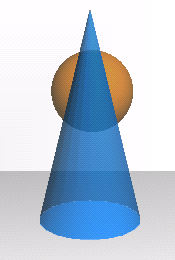
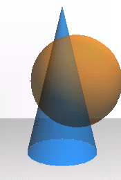
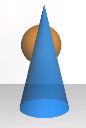
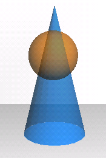

Una altra forma de presentar objectes semitransparents és usant alpha-blending. Aquesta tècnica consisteix a representar l'opacitat de cada objecte com el valor d'alpha de l'objecte. A l'hora de pintar-lo, usem aquest valor per a calcular una certa barreja entre el valor ja emmagatzemat al frame buffer i el del nou fragment que hem de pintar en aquella posició. Concretament hom fa servir típicament la fórmula següent:
Si en aquesta fórmula pensem en el valor d'α com el grau d'opacitat, veiem que l'objecte contribueix al color resultant sols una fracció del seu color propi, donada per aquesta opacitat, i en canvi transmet la quantitat complementària de llum dels resultats de passades prèvies al mateix píxel. Perquè el resultat sigui l'esperat, cal doncs que al píxel destí s'hi trobi ja el color resultant de la rasterització de totes les primitives que es troben darrera de l'objecte transparent. Altrament, la barreja de colors que suposa aquesta fórmula es basaria en valors erronis (no disposaria del color representant la llum que el vidre ha de filtrar). Aquesta tècnica produeix resultats bons, per tant, sols quan les primitives es pinten de darrera cap endavant. Això pel que pertoca, naturalment, als polígons transparents. Els que no ho siguin poden pintar-se tots inicialment, i sols haurem de tenir cura que els elements transparents apareguin en l'ordre correcte.
Les següents dues imatges són dos instants en l'execució d'un programa que mostra una esfera i un con semitransparents. L'esfera recorre una òrbita circular al voltant del con. Observeu les diferències en el color quan l'esfera és davant del con (i naturalment apareix més gran perquè és més a prop), i quan és darrera.
|  |  | |
| Fig. 1-a | Fig. 1-b |
Si les primitives no estàn correctament ordenades, ens trobarem amb diferents problemes. Imaginem que pintem dos objectes transparents A i B, on A és (parcialment) darrera de B, i ho fem a l'ordre equivocat, és a dir pintem primer B i després A. D'una banda, si pintem els dos objectes amb el test de profunditat activat, la porció de l'objecte A que és darrera B no s'arribarà a rasteritzar mai, perquè els seus fragments fallaran el test de profunditat. Per tant no tindràn oportunitat de contribuir al color resultant, el que és erroni perquè l'altre objecte és tranparent. Això es veu a la primera de les següents dues figures, on A és l'esfera, i B el con:
|  |  | |
| Fig. 2-a | Fig. 2-b |
La segona d'aquestes figures mostra el que passa si desactivem el test de profunditat. Observeu que no sempre tindrem possibilitat de desactivar-lo. En aquest cas podem fer-ho perquè sabem que no hi ha altres objectes opacs davant. Però inclús així, el resultat que obtenim no és correcte. Quan els fragments del con han arribat al frame buffer aquest sols contenía el color de la paret del fons, amb el què s'ha barrejat el del con. En arribar els de l'esfera es troben ja al frame buffer el resultat de rasteritzar el con, i el color de l'esfera es barreja amb el del con com hauria passat si l'esfera hagués estat davant! Compareu els colors de la zona on es solapen els dos objects en la figura 2-b amb la figura 1-a. Evidentment els colors no es corresponen amb els de l'esfera darrera del con.
Exercici 2.1:
Si compareu els colors dels objectes en l'àrea en què es superposen
entre la figura 2-b i la 1-b, tampoc coincideixen. A què es deu la
diferència?
Solució